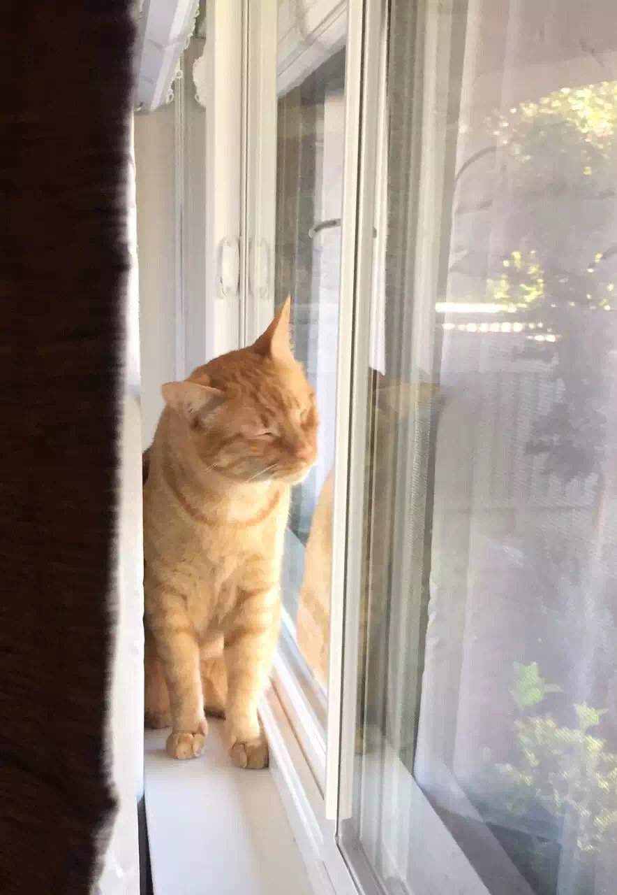

求带猫回国经验 我亲爱的小莫奈要跟我一起回国，我希望给他一个尽量舒适的旅行。目前只搞清楚疫苗和健康证明方面的信息，但是航班方面还不是很清楚。能带宠物进入客舱的航班貌似只有 UA 的，然而这次 UA 的恶劣行径，再加上以前坐 UA 的经历，让我不可能再光顾他们。 中国的航空公司貌似都只能把宠物放在有氧货舱，但是关于这个有氧舱和旅行用的笼子，我还有挺多疑虑，害怕出问题。也不知道宠物机票等操作的顺序和方法。网上的资料很多啰里八嗦，搞不清楚重点，也不知道有没有过时。所以还请有亲身经验的高手，或者知道相关论坛的人给我指点一下，发信到 shredderyin@gmail.com 即可。 |